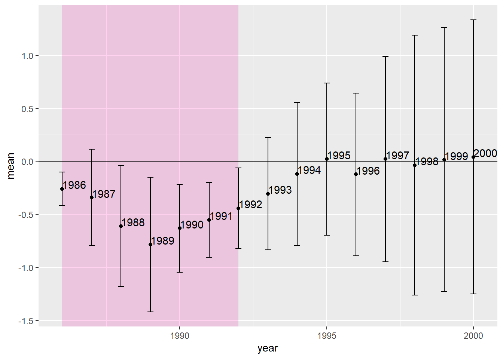
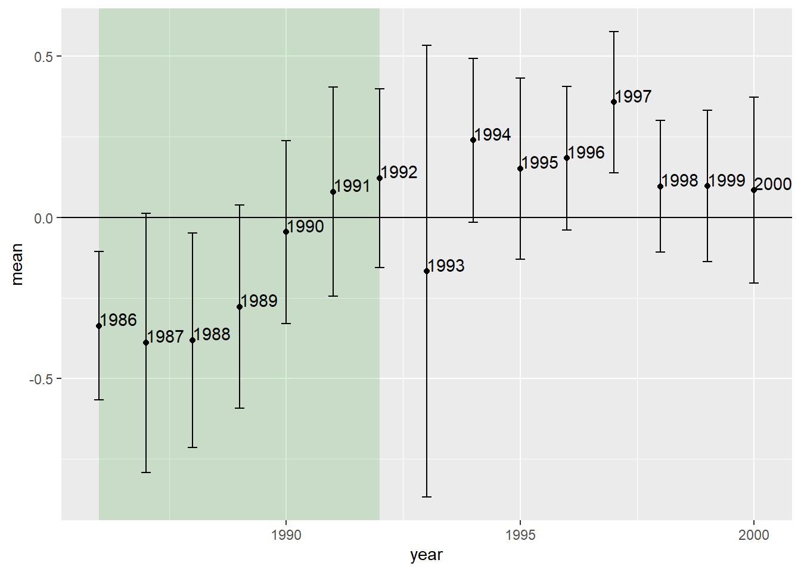
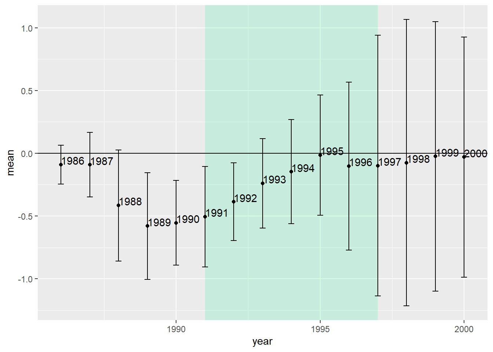
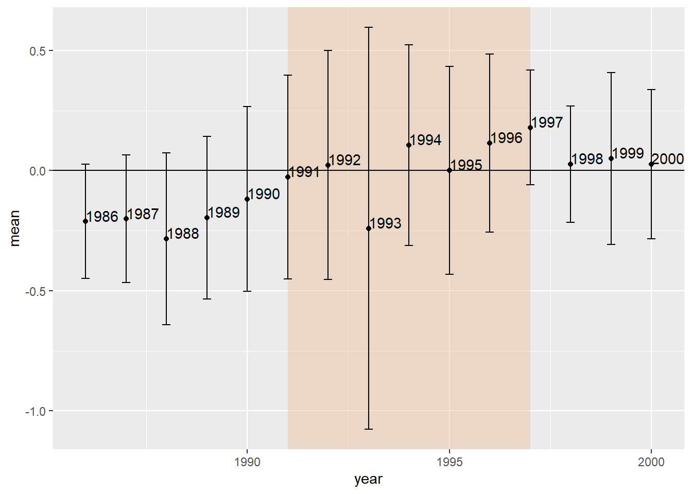

En este contexto, los autores plantearon el siguiente modelo:
\[Y_st = \beta_1Repeals + \beta_2DT_t +
\beta_3 Repeal_s DT_t + X_st\psi +\alpha_sDS_s+\varepsilon_{st}\]
donde
\(Y\) es el número logarítmico de
nuevos casos de gonorrea en jóvenes de 15 a 19 años (por cada 100.000
habitantes);
\(Repeal_s\) es igual a 1
si el estado legalizó el aborto antes de Roe;
\(DT_t\) es una variable dummy de año;
\(DS_s\) es una variable dummy de estado;
\(t\) es una tendencia temporal;
\(X\) es una matriz de covariables. En el
documento, a veces incluía tendencias lineales específicas del estado,
pero para este análisis, presento el modelo más simple. Por último,
\(\varepsilon_{st}\) es un término de
error estructural que se supone condicionalmente independiente de los
regresores. Además, todos los errores estándar fueron agruparon a nivel
estatal, lo que permite una correlación serial arbitraria.
A contuinuación se presentan los coeficientes de forma gráfica, donde es
posible observar qye hay un efecto negativo durante la ventana en la que
Roe no se ha puesto totalmente al día, y ese efecto negativo forma una
parábola, tal y como predecía nuestra teoría.

Sin embargo, identificar de forma creíble los efectos causales
requiere tanto encontrar efectos como descartar explicaciones
alternativas. por ello, los autores presentan pruebas de una diferencia
triple en la que se utiliza una cohorte no tratada como control dentro
del estado. Para llevarlo a cabo, los autores seleccionaron a los
jóvenes de 25 a 29 años de los mismos estados como grupos de comparación
dentro de los estados en lugar de a los jóvenes de 20 a 24 años dado que
necesitaban un grupo de edad que estuviera lo suficientemente cerca como
para captar las tendencias comunes, pero lo suficientemente lejos como
para no violar la SUTVA. Dado que los jóvenes de 15 a 19 años tenían más
probabilidades que los de 25 a 29 años de mantener relaciones sexuales
con jóvenes de 20 a 24 años, eligieron el grupo ligeramente mayor como
control dentro de la etapa. En este caso el modelo planteado fue el
siguiente:
\[Y_st = \beta_1Repeals + \beta_2DT_t +
\beta_3 Repeal_s DT_t + \delta_1 DA + \delta_2 Repeal_s DA
+\delta_{3t}DA.DT_t + \delta_{4t} Repeals_s.DA.DT_t + X_{st}\xi +
\alpha_{1s}DS_s + \alpha_{2s}DS_s.DA + \gamma_1t +\gamma_{2s}DS_s.t +
\gamma_3DA.t+\gamma_{4s}DS_s.DA.t +\varepsilon_{st}\] Dónde el
parámetro DDD que estamos estimando es
\(\delta_{4t}\) (la interacción completa). en
el modelo hay 7 variables ficticias separadas porque el parámetro DDD
tiene las tres interacciones. Por lo tanto, como hay ocho combinaciones,
los autores tuvieron que descartar una como grupo omitido y controlar
por separado las otras siete

En este gráfico vemos como la predicción empieza a romperse. Aunque hay
efectos negativos para los años 1986 a 1990, los coeficientes de 1991 y
1992 son positivos, lo que no concuerda la hipótesis de los autores.
Además, sólo los cuatro primeros coeficientes son estadísticamente
significativos. Los coeficientes dinámicos DD son capturados por las
interacciones derogación-año.
Mientras que el estudio original no ahondó más, el autor del libro
profundizó en sus hallazgos. En la medida en que las cohortes de
principios de la década de 1970 fueron “tratadas en el utero” con la
legalización del aborto, el autor afirma que se debería ver no sólo una
parábola para las personas de 15 a 19 años de 1986 a 1992, sino también
para las de 20 a 24 años de 1991 a 1997, a medida que las cohortes
continuaban envejeciendo. De esta forma, incluyó el análisis para la
cohorte de 20 a 24 años y mujeres negras (de forma ilustrativa).

Al correr el modelo, el autor destaca en primer lugar, que aparece una
parábola negativa donde no había necesariamente una prevista: el periodo
1986-1992. Nótese que es el periodo en el que sólo las cohortes de 15 a
19 años fueron las tratadas, lo que sugiere que el análisis previo de 15
a 19 años estaba detectando algo distinto a la legalización del aborto.
Pero esa era también la justificación para utilizar la DDD, ya que
claramente algo más está ocurriendo en los estados de la derogación
frente a los de Roe durante esos años que no podemos controlar
adecuadamente con nuestra estrategia metodológica.Lo segundo que destaca
es que no hay parábola en la ventana de tratamiento para la cohorte de
tratamiento. Los tamaños del efecto son negativos al principio, pero
disminuyen en valor absoluto cuando deberían estar creciendo. De hecho,
el periodo de 1991 a 1997 es de convergencia a cero, no de divergencia
entre estos dos conjuntos de estados. Pero como antes, puede que haya
fuertes tendencias inobservables para todos los grupos que enmascaren el
efecto de la legalización del aborto.
Finalmente, el autor detalla los coeficientes estimados de la DDD para
la cohorte tratada en relación con una cohorte ligeramente mayor de 25 a
29 años. Es posible que la cohorte de 25 a 29 años esté demasiado cerca
en edad para funcionar como un control satisfactorio dentro del estado;
si los de 20 a 24 años tienen relaciones sexuales con los de 25 a 29
años, por ejemplo, entonces se viola la SUTVA.

3. conclusión
La hipótesis de la legalización del aborto hizo una serie de
predicciones sobre dónde deberían aparecer en los datos los efectos
parabólicos negativos del tratamiento. Sin embargo, cuando el autor
exporó más esas predicciones, los resultados refutaron la hipotesis
inicial.